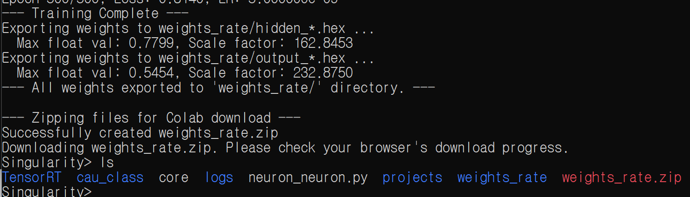
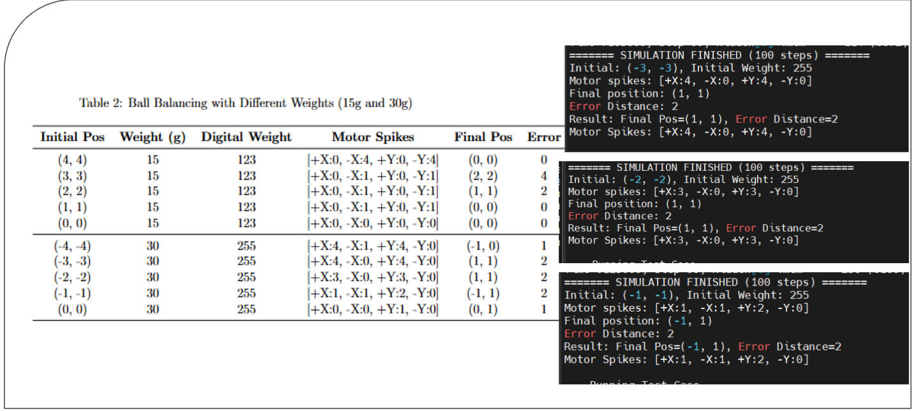
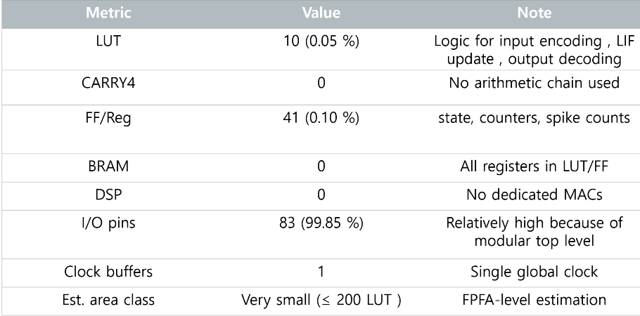
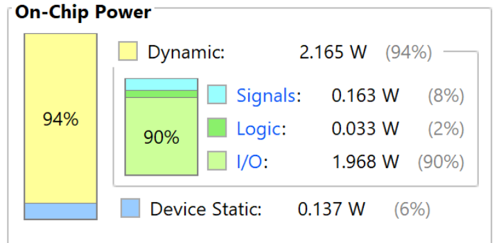

3. 입력 조건별 시뮬레이션과 구현 결과
이 글에서는 one-shot 입력과 무게를 반영한 rate-encoding 입력을 비교하고, 방향별 spike 수와 좌표 변화를 확인한 과정을 설명합니다. 입력 생성, 막전위 갱신, 출력 방향과 반응량을 순서대로 점검한 뒤, 합성 자원과 Vivado 전력 추정 결과를 정리했습니다. 실험에서 나타난 overshoot를 바탕으로 다음에 조정할 조건도 살펴봅니다.
검증 구성
Testbench에서 좌표와 digital weight를 설정하고, 파형으로 입력·막전위·출력 spike의 시간 순서를 확인했다. 이어 방향별 count와 최종 좌표를 표로 정리하고, Vivado 보고서에서 합성 자원과 추정 전력 구성을 살펴봤다. One-shot과 rate-encoding 실험은 RTL·testbench·weight를 각각 묶어 입력 방식과 설정을 비교할 수 있도록 했다.
- 기능
- 100 time-step Verilog simulation
- 입력
- one-shot → 무게 반영 rate encoding
- 합성
- LUT · FF · I/O 사용량
- 전력
- Vivado 전력 보고서
입력 조건
검증은 먼저 좌표와 네 방향 출력의 기본 연결을 확인하고, 이후 무게 정보를
입력에 추가하는 순서로 진행했다. 실험 1은 현재 좌표를 한 번의 spike로
전달해 weight 연결과 출력 방향을 확인하는 기준점이다. 실험 2는 같은
위치 표현에 ball_weight를 추가하고, 입력 spike의 개수를
무게에 따라 바꿔 시간축 자극에 대한 반응을 비교한다.
| 실험 | 입력 표현 | 확인한 질문 | 주요 파라미터 |
|---|---|---|---|
| 1 | 위치 one-shot | 좌표 부호와 네 방향 출력이 의도대로 연결되는가 | Threshold 40 · Leak shift 4 |
| 2 | 무게 반영 rate encoding | 무게 변화가 spike 밀도와 제어 반응에 반영되는가 | Threshold 300 · Leak shift 6 |
두 실험에서는 입력 방식과 함께 threshold와 leak도 변경했다. 아래 결과를 읽을 때는 표에 정리한 입력 조건과 뉴런 설정을 함께 살펴보면 된다.
| 검증 자료 | 확인 대상 | 확인할 내용 |
|---|---|---|
| Testbench 입력 | 좌표, start, digital weight | 의도한 조건이 RTL에 전달되는지 확인 |
| 내부 파형 | input spike, membrane, threshold, output spike | time step과 뉴런 상태 변화 확인 |
| 방향별 count | +X·−X·+Y·−Y 누적값 | 중앙 방향과 반대 방향의 반응 비교 |
| 좌표 갱신 모델 | spike count를 이동 칸 수로 적용 | 디지털 제어 규칙 안의 최종 위치 계산 |
학습 결과를 RTL 입력으로 옮기는 과정
계층형 99→32→4 실험망의 가중치는 software에서 학습한 뒤 정수 .hex 파일로 변환했다. 은닉층과 출력층의 최대 절댓값에
맞춰 scale factor를 적용하고, one-shot과 rate-encoding 실험의 weight 파일을 따로 구성했다. RTL testbench는
파일을 읽어 입력 좌표에 대한 가중합과 spike count를 계산한다. 이렇게 학습과 실행을 나누면서 실수 가중치의 부호와 상대 크기를 정수 표현으로 옮기는
과정을 살펴봤다.

| 단계 | 산출물 | 검증 질문 |
|---|---|---|
| Software 학습 | 은닉층·출력층 실수 weight | 대표 위치에서 중앙 방향 반응을 학습했는가 |
| 정수 변환 | hidden_*.hex, output_*.hex | 정수 범위에서 부호와 상대 크기가 유지되는가 |
| RTL 로드 | Testbench가 읽는 weight memory | 파일 순서와 뉴런 연결 순서가 일치하는가 |
| 100 time steps | 방향별 spike count | 입력 방식에 따른 발화 차이가 나타나는가 |
무게별 simulation 결과
15g에는 digital weight 123, 30g에는 255를 사용한다. 표는 최종 발표자료의 열 개 결과를 제시한다. 15g 조건은 다섯 초기 위치 중 세 경우에서 (0,0)에 도달하며, 30g 조건은 더 많은 spike와 함께 overshoot를 보인다.
표의 오차는 최종 좌표의 |x|+|y|로 읽을 수 있다. 값이 0이면
이산 좌표 모델에서 중앙에 도달한 것이고, 값이 클수록 중앙에서 더 멀리
남아 있다. 따라서 방향이 맞게 나온 것과 정확히 중앙에서 멈춘 것은
별개의 평가 항목이다. 예를 들어 15g의 (3,3) 입력은 −X와 −Y 방향을
올바르게 선택하지만 각 축에서 한 칸만 이동해 (2,2)에 남는다.
| 무게 | Weight | 초기 위치 | 방향별 spike | 최종 위치 | 오차 |
|---|---|---|---|---|---|
| 15g | 123 | (4, 4) | +X 0 · −X 4 · +Y 0 · −Y 4 | (0, 0) | 0 |
| 15g | 123 | (3, 3) | +X 0 · −X 1 · +Y 0 · −Y 1 | (2, 2) | 4 |
| 15g | 123 | (2, 2) | +X 0 · −X 1 · +Y 0 · −Y 1 | (1, 1) | 2 |
| 15g | 123 | (1, 1) | +X 0 · −X 1 · +Y 0 · −Y 1 | (0, 0) | 0 |
| 15g | 123 | (0, 0) | +X 0 · −X 0 · +Y 0 · −Y 0 | (0, 0) | 0 |
| 30g | 255 | (−4, −4) | +X 4 · −X 1 · +Y 4 · −Y 0 | (−1, 0) | 1 |
| 30g | 255 | (−3, −3) | +X 4 · −X 0 · +Y 4 · −Y 0 | (1, 1) | 2 |
| 30g | 255 | (−2, −2) | +X 3 · −X 0 · +Y 3 · −Y 0 | (1, 1) | 2 |
| 30g | 255 | (−1, −1) | +X 1 · −X 1 · +Y 2 · −Y 0 | (−1, 1) | 2 |
| 30g | 255 | (0, 0) | +X 0 · −X 0 · +Y 1 · −Y 0 | (0, 1) | 1 |

30g 조건에서는 입력 rate와 출력 반응이 함께 커졌지만 중앙 수렴 성능은 낮아졌다. (−3,−3)과 (−2,−2)에서는 +방향 spike가 필요한 거리보다 많아 (1,1)로 넘어갔고, 중앙 (0,0)에서도 +Y spike가 발생해 (0,1)로 이동했다. 이 결과를 통해 방향 선택과 반응량 조절을 따로 살펴볼 필요가 있었다. 후속 조정 항목은 중앙 근처의 gain 감소와 출력 feedback이다.
합성 자원
최종 발표자료의 합성 표에는 LUT 10개, FF 41개, BRAM과 DSP 0개가 기록된다. I/O는 83개이며 장치의 I/O 자원 대부분을 사용한다. 논리 자원과 I/O 사용량은 서로 다른 항목으로 표시한다.
자원표에서는 내부 계산에 쓰는 LUT·FF와 외부 신호를 연결하는 I/O를 따로 살펴봤다. 해당 표에는 BRAM과 DSP 사용량이 0으로 기록되어 있고, I/O는 83개를 사용한다. 내부 논리의 규모가 작더라도 top-level 신호를 넓게 노출하면 핀 사용량은 커질 수 있다. 이처럼 항목별 사용량을 나누어 보면 구현에서 어느 부분이 자원을 차지하는지 파악할 수 있다.

전력 보고서에서 확인한 점
Vivado 전력 보고서에서 총 전력은 2.302W이며, dynamic power는 2.165W, static power는 0.137W이다. Dynamic power 가운데 I/O가 1.968W를 차지한다. 먼저 전체 값을 확인하고, 이어 어떤 항목의 비중이 큰지 살펴봤다.
총 전력에서 dynamic power가 약 94%를 차지하고, 그 dynamic power의 약 90%는 I/O 항목이다. 전력 보고서를 전체 값에서 세부 항목으로 나누어 읽으면서, 이 설계에서는 내부 계산뿐 아니라 top-level 신호의 toggle 조건도 크게 작용한다는 점을 확인했다.

실험에서 정리한 내용
| 단계 | 살펴본 자료 | 배우고 적용한 내용 |
|---|---|---|
| 입력 부호화 | one-shot·rate encoder RTL과 testbench | 위치 선택과 시간축의 자극 빈도를 나누어 표현 |
| 뉴런 연산 | 100 time-step 기능 simulation | 막전위 누적·누설·임계값의 관계를 파형으로 확인 |
| 출력 해석 | 방향별 spike count와 좌표 갱신 | 출력 방향과 목표에 필요한 반응량을 각각 비교 |
| FPGA 구현 | 합성 자원표와 Vivado 전력 보고서 | 내부 논리와 I/O의 자원·전력 비중을 구분해 읽기 |
| 후속 설계 | 중앙 도달과 overshoot 결과 | gain 조정과 위치 feedback을 다음 검증 항목으로 정리 |
실험을 통해 위치와 무게를 spike로 표현하고, LIF 네트워크가 네 방향 제어 이벤트를 만드는 흐름을 확인했다. 무게에 따라 반응량이 달라졌고, 일부 조건에서는 중앙 도달과 overshoot의 차이가 나타났다. 입력 부호화, 뉴런 설정, 출력 해석을 연결해서 살펴보는 것이 이번 검증의 중심이었다.
추가 검증 항목
무거운 공의 overshoot
무게별 rate, threshold, leak, 출력 scaling을 공동 탐색하고 중앙 근처에서는 출력 gain을 줄이는 조건을 검증한다.
좌표 추정 오차
좌표 오차와 frame 지연을 입력해, 목표 반경 1cm 안에서 방향 출력이 진동하지 않는지 확인한다.
spike와 실제 구동량
1-bit 방향 이벤트를 PWM·pulse width로 변환하고 반대 축 actuator의 복원 동작을 정의한다.
모델·RTL·보드 결과 비교
동일한 입력을 software model, RTL simulation, FPGA, 실제 장치에 넣고 최초 차이 지점을 단계별로 기록한다.
다음 단계는 99개 위치와 여러 무게를 자동으로 순회하는 regression test이다. 이후 센서와 actuator 모델을 붙인 closed-loop simulation으로 확장하고, 같은 평가 지표를 실제 보드에도 적용하는 순서로 검증을 이어갈 수 있다.